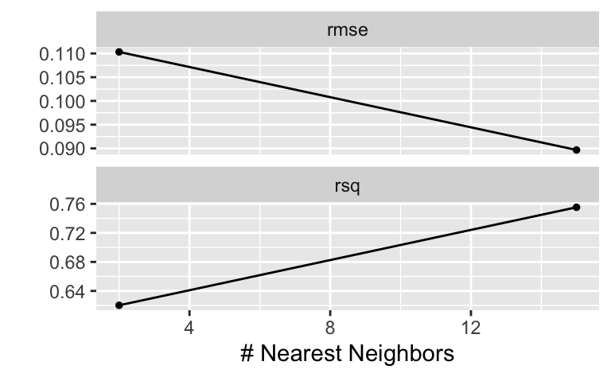

library(tidymodels)
library(tictoc) # Rechenzeit messen, optional
data(ames)Aufgabe
Berechnen Sie ein knn-Modell mit tidymodels und zwar anhand des ames Datensatzes.
Modellgleichung: log(Sale_Price) ~ ., data = ames_train.
Gesucht ist R-Quadrat als Maß für die Modellgüte im TEST-Sample.
Hinweise:
- Fixieren Sie die Zufallszahlen auf den Startwert 42.
- Denken Sie daran, die nominal skalierten Variablen in Dummy-Variablen umzurechnen.
- Denken Sie daran, dass kNN gleich skalierte Prädiktoren benötigt.
- Nutzen Sie eine v=10,r=1 CV.
- Verzichten Sie auf weitere Schritte der Vorverarbeitung.
Lösung
Setup:
AV loggen:
ames <-
ames %>%
mutate(Sale_Price = log(Sale_Price, base = 10))Datensatz aufteilen:
set.seed(42)
data_split <- initial_split(ames, strata = "Sale_Price")
ames_train <- training(data_split)
ames_test <- testing(data_split)Workflow:
ames_rec <-
recipe(Sale_Price ~ ., data = ames_train) %>%
# step_log(Sale_Price, base = 10) %>% No!
step_other(Neighborhood, threshold = .1) %>%
step_dummy(all_nominal()) %>%
step_zv(all_predictors())
knn_model2 <-
nearest_neighbor(
mode = "regression",
neighbors = tune() # Wir tunen "neighbors"
)
ames_wflow2 <-
workflow() %>%
add_recipe(ames_rec) %>%
add_model(knn_model2)
ames_wflow2══ Workflow ════════════════════════════════════════════════════════════════════
Preprocessor: Recipe
Model: nearest_neighbor()
── Preprocessor ────────────────────────────────────────────────────────────────
3 Recipe Steps
• step_other()
• step_dummy()
• step_zv()
── Model ───────────────────────────────────────────────────────────────────────
K-Nearest Neighbor Model Specification (regression)
Main Arguments:
neighbors = tune()
Computational engine: kknn CV:
set.seed(42)
ames_folds <- vfold_cv(ames_train, strata = "Sale_Price", v = 2)
ames_folds# 2-fold cross-validation using stratification
# A tibble: 2 × 2
splits id
<list> <chr>
1 <split [1098/1099]> Fold1
2 <split [1099/1098]> Fold2Tunen:
tic()
ames_grid_search <-
tune_grid(
knn_model2,
ames_rec,
resamples = ames_folds,
control = control_grid(save_workflow = TRUE),
grid = 2, # 2 Tuningparameterwerte, hier nur zum Zeit sparen
)
toc()3.418 sec elapsedames_grid_search# Tuning results
# 2-fold cross-validation using stratification
# A tibble: 2 × 4
splits id .metrics .notes
<list> <chr> <list> <list>
1 <split [1098/1099]> Fold1 <tibble [4 × 5]> <tibble [0 × 3]>
2 <split [1099/1098]> Fold2 <tibble [4 × 5]> <tibble [0 × 3]>Modellgüte im Train-Samples über die Tuningparameter hinweg:
autoplot(ames_grid_search)
Fitte besten Modellkandidaten (Paket tune >= V1.1.0 benötigt):
fit1_final <- fit_best(ames_grid_search)Vorhersagen:
preds <-
predict(fit1_final, ames_test)Modellgüte im Test-Sample:
fit1_metrics <-
preds %>%
bind_cols(ames_test %>% select(Sale_Price)) %>%
rsq(truth = Sale_Price, estimate = .pred)
fit1_metrics# A tibble: 1 × 3
.metric .estimator .estimate
<chr> <chr> <dbl>
1 rsq standard 0.739R-Quadrat:
sol <- fit1_metrics %>% pull(.estimate)
sol[1] 0.739015Categories:
- ds1
- tidymodels
- prediction
- yacsda
- statlearning
- num